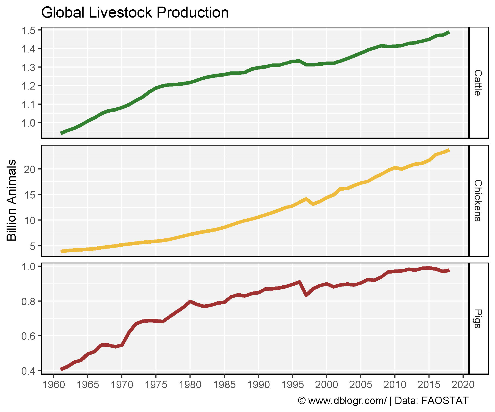
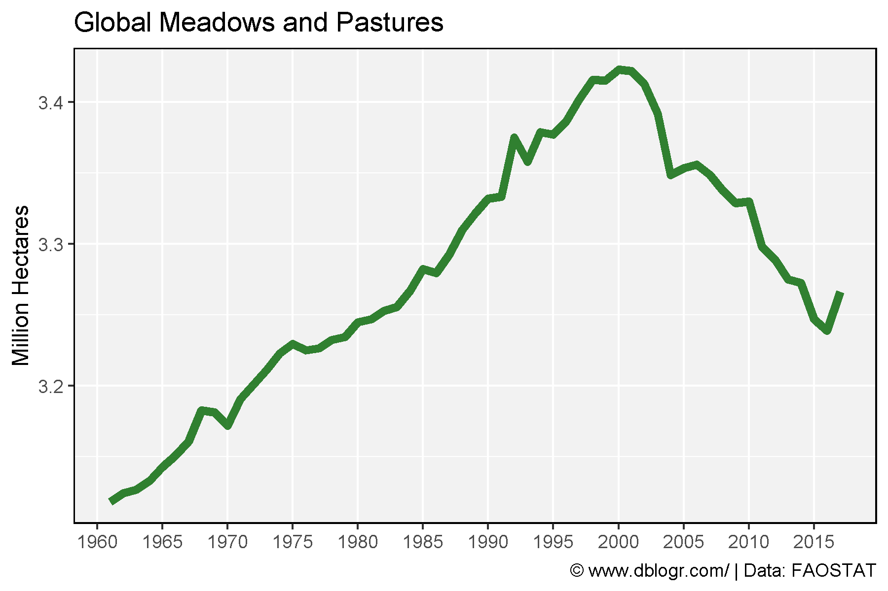

# devtools::install_github("derekmichaelwright/agData")
library(agData) # Loads: tidyverse, ggpubr, ggbeeswarm, ggrepel# Prep Data
colors <- c("darkgreen", "darkgoldenrod2", "darkred")
xx <- agData_FAO_Livestock %>%
filter(Animal %in% c("Cattle","Pigs","Chickens"), Area == "World")
# Plot Data
mp <- ggplot(xx, aes(x = Year, y = Value / 1000000000, color = Animal)) +
geom_line(size = 1.5, alpha = 0.8) +
facet_grid(Animal~., scales = "free_y") +
scale_x_continuous(breaks = seq(1960, 2020, 5), minor_breaks = NULL) +
scale_color_manual(values = colors) +
theme_agData(legend.position = "none") +
labs(title = "Global Livestock Production", y = "Billion Animals", x = NULL,
caption = "\xa9 www.dblogr.com/ | Data: FAOSTAT")
ggsave("livestock_01.png", mp, width = 6, height = 5)
# Prep Data
xx <- agData_FAO_LandUse %>%
filter(Item == "Land under perm. meadows and pastures",
Area == "World")
# Plot
mp <- ggplot(xx, aes(x = Year, y = Value / 1000000)) +
geom_line(color = "darkgreen", size = 2, alpha = 0.8) +
scale_x_continuous(breaks = seq(1960, 2020, 5), minor_breaks = NULL) +
theme_agData() +
labs(y = "Million Hectares", x = NULL, title = "Global Meadows and Pastures",
caption = "\xa9 www.dblogr.com/ | Data: FAOSTAT")
ggsave("livestock_02.png", mp, width = 6, height = 4)
© Derek Michael Wright www.dblogr.com/